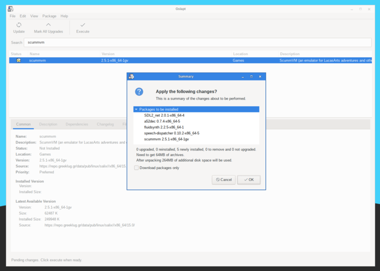

Gslapt is the GUI version of slapt-get . It allows one to search Slackware/Salix mirrors for packages. Before use you should first click on the Update button to ensure that the latest updates from the software repositories are known to Gslapt. The search field is there for you to search for a particular package. You can highlight with your left click and choose to install/uninstall/reinstall packages with a right click. Gslapt detects dependencies and will install all the dependency files for a package automatically. Installation, uninstallation or reinstallation of packages (whichever applies) will take place once you click on the Execute button. You can blacklist packages by adding their names to the blacklist found in "Preferences" under "Edit".
On first installing Salix, you should also do a general package upgrade to ensure your installed system is up to date with the repositories -- click on "Mark all upgrades", then "Execute".
